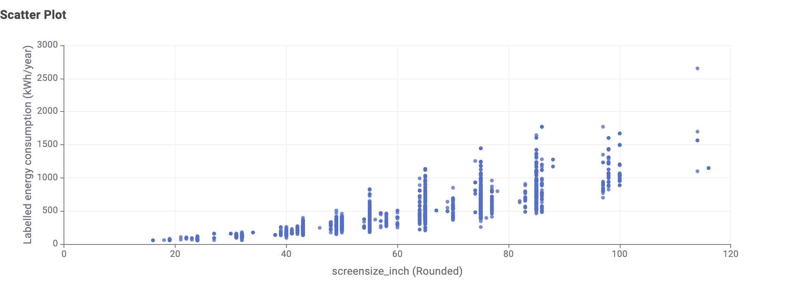
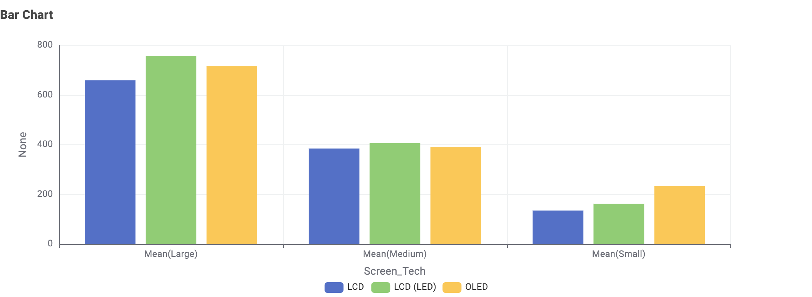

Does a bigger TV mean higher energy consumption?
For many Australian households, screen size is a key part of choosing a new television. A larger screen may give a better viewing experience, but it may also need more electricity to run.
Before we look at the data
Who this is for
Households across Australia choosing a new TV or replacing an old one. You do not need a statistics background. Sizes are in inches and energy is in kWh per year, the same unit used on the Energy Rating Label.
What you probably already know
A bigger TV probably uses more power, and many appliances carry an energy label. Your electricity bill is measured in kWh, but you may not think in kWh when you shop for a TV.
What this page adds
How big the gap really is, not just which way it points. What it means in dollars per year. And why two TVs of the same size can still use different amounts of electricity.
The surprise: the gap is bigger than you might expect
The average Large TV uses about 4.7 times as much electricity per year as the average Small TV.
Most people expect a bigger TV to cost a little more to run. In this data the difference is far more than a little.
That makes screen size a decision about your electricity bill as well as your living room.
The numbers behind it
Each TV in the dataset has a labelled annual energy consumption. Grouping the TVs by screen size and averaging each group gives these results.
| Size group | Average energy use | Compared with Small |
|---|---|---|
| Small | 158 kWh/year | baseline |
| Medium | 403 kWh/year | 2.6 times |
| Large | 746 kWh/year | 4.7 times |
The step from Small to Large is 588 kWh a year per TV on average. These are averages for the TVs in this dataset, so an individual TV can be higher or lower.
Charts
Grouped by size, the gap is easy to see
Each bar is the average for one size group, ordered from Small to Large so the rise reads left to right.
Change the electricity price to see what each group costs to run for a year.
Average annual energy use increases with TV size
-
Smallbaseline158 kWh/yearabout $47.40 a year
-
Medium2.6× Small403 kWh/yearabout $120.90 a year
-
Large4.7× Small746 kWh/yearabout $223.80 a year
Every TV, one dot each
The dots rise from left to right, so the gap is not just a result of grouping the TVs.
They also spread up and down. TVs of the same size can use quite different amounts of electricity, so size matters a lot but it is not the only factor.

Does screen technology change the answer?
Grouping the same TVs by screen technology gives a similar picture. In every size group, LCD, LCD (LED) and OLED sit close together compared with the jump from one size group to the next.
Technology does make some difference, most visibly for Small TVs, where OLED has the highest average. It does not change the main story: size comes first.

What this means for your next TV
Bigger screens generally come with higher energy use.
Before you buy, compare the kWh per year on the Energy Rating Label for TVs of the same size. Screen technology changes the number less than size does, so the label is the quickest way to tell similar-sized TVs apart.
This does not mean everyone should choose the smallest TV. It means asking how much screen you really need, because that choice shows up on every electricity bill. About Us explains how the data was prepared and what it cannot tell you.